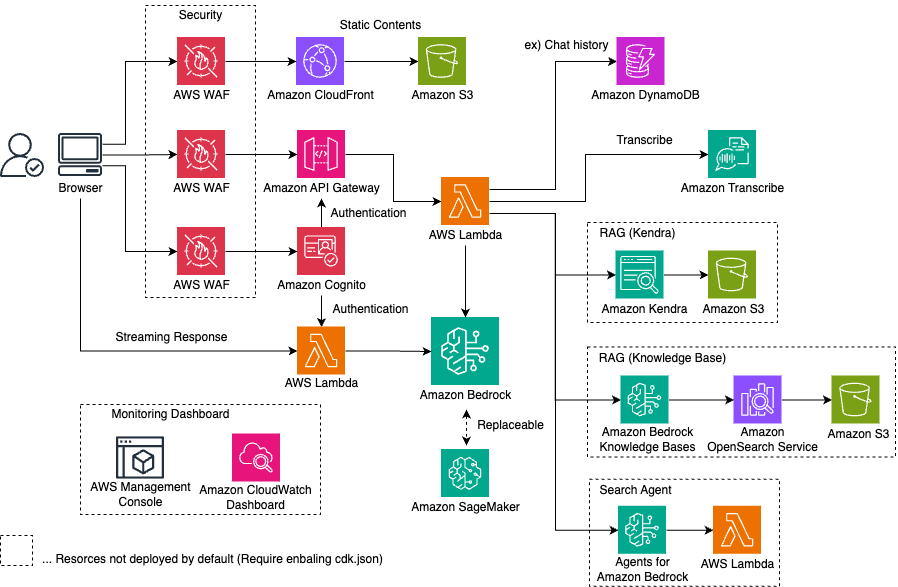

Generative AI Use Cases (GenU)¶


English | 日本語
Application implementation with business use cases for safely utilizing generative AI in business operations

GenU Usage Patterns¶
Here we introduce GenU's features and options by usage pattern. For comprehensive deployment options, please refer to this document.
Tip
Click on a usage pattern to see details
I want to experience generative AI use cases
GenU provides a variety of standard use cases leveraging generative AI. These use cases can serve as seeds for ideas on how to utilize generative AI in business operations, or they can be directly applied to business as-is. We plan to continuously add more refined use cases in the future. If unnecessary, you can also hide specific use cases with an option. Here are the use cases provided by default.
| Use Case | Description |
| Chat | You can interact with large language models (LLMs) in a chat format. The existence of platforms that allow direct dialogue with LLMs enables quick responses to specific and new use cases. It's also effective as a testing environment for prompt engineering. |
| Text Generation | Generating text in any context is one of the tasks LLMs excel at. It generates all kinds of text including articles, reports, and emails. |
| Summarization | LLMs are good at summarizing large amounts of text. Beyond simple summarization, they can also extract necessary information in a conversational format after being given text as context. For example, after reading a contract, you can ask questions like "What are the conditions for XXX?" or "What is the amount for YYY?" |
| Writing | LLMs can suggest improvements from a more objective perspective, considering not only typos but also the flow and content of the text. You can expect to improve quality by having the LLM objectively check points you might have missed before showing your work to others. |
| Translation | LLMs trained in multiple languages can perform translations. Beyond simple translation, they can incorporate various specified contextual information such as casualness and target audience into the translation. |
| Web Content Extraction | Extracts necessary information from web content such as blogs and documents. The LLM removes unnecessary information and formats it into well-structured text. Extracted content can be used in other use cases such as summarization and translation. |
| Image Generation | Image generation AI can create new images based on text or existing images. It allows for immediate visualization of ideas, potentially improving efficiency in design work. In this feature, LLMs can assist in creating prompts. |
| Video Generation | Video generation AI creates short videos from text. The generated videos can be used as materials in various scenarios. |
| Video Analysis | With multimodal models, it's now possible to input not only text but also images. In this feature, you can ask the LLM to analyze video frames and text inputs. |
| Diagram Generation | Diagram generation visualizes text and content on any topic using optimal diagrams. It allows for easy text-based diagram creation, enabling efficient creation of flowcharts and other diagrams even for non-programmers and non-designers. |
I want to do RAG
RAG is a technique that allows LLMs to answer questions they normally couldn't by providing external up-to-date information or domain knowledge that LLMs typically struggle with. PDF, Word, Excel, and other files accumulated within your organization can serve as information sources. RAG also has the effect of preventing LLMs from providing "plausible but incorrect information" by only allowing answers based on evidence.
GenU provides a RAG Chat use case. Two types of information sources are available for RAG Chat: Amazon Kendra and Knowledge Base. When using Amazon Kendra, you can use manually created S3 Buckets or Kendra Indexes as they are. When using Knowledge Base, advanced RAG features such as Advanced Parsing, Chunk Strategy Selection, Query Decomposition, and Reranking are available. Knowledge Base also allows for Metadata Filter Settings. For example, you can meet requirements such as "switching accessible data sources by organization" or "allowing users to set filters from the UI."
I want to use custom AI agents or Bedrock Flows within my organization
When you enable agents in GenU, Web Search Agent and Code Interpreter Agent are created. The Web Search Agent searches the web for information to answer user questions. For example, it can answer "What is AWS GenU?" The Code Interpreter Agent can execute code to respond to user requests. For example, it can respond to requests like "Draw a scatter plot with some dummy data."
While Web Search Agent and Code Interpreter Agent are basic agents, you might want to use more practical agents tailored to your business needs. GenU provides a feature to import agents that you've created manually or with other assets.
By using GenU as a platform for agent utilization, you can leverage GenU's rich security options and SAML authentication to spread practical agents within your organization. Additionally, you can hide unnecessary standard use cases or display agents inline to use GenU as a more agent-focused platform.
Similarly, there is an import feature for Bedrock Flows, so please make use of it.
I want to create custom use cases
GenU provides a feature called "Use Case Builder" that allows you to create custom use cases by describing prompt templates in natural language.
Custom use case screens are automatically generated just from prompt templates, so no code changes to GenU itself are required.
Created use cases can be shared with all users who can log into the application, not just for personal use.
Use Case Builder can be disabled if not needed.
For more details about Use Case Builder, please check this blog.
While Use Case Builder can create use cases where you input text into forms or attach files, depending on your requirements, a chat UI might be more suitable.
In such cases, please utilize the system prompt saving feature of the "Chat" use case.
By saving system prompts, you can create business-necessary "bots" with just one click.
For example, you can create "a bot that thoroughly reviews source code when input" or "a bot that extracts email addresses from input content."
Additionally, chat conversation histories can be shared with logged-in users, and system prompts can be imported from shared conversation histories.
Since GenU is OSS, you can also customize it to add your own use cases.
In that case, please be careful about conflicts with GenU's main branch.
Deployment¶
Important
Please enable the modelIds (text generation), imageGenerationModelIds (image generation), and videoGenerationModelIds (video generation) in the modelRegion region listed in /packages/cdk/cdk.json. (Amazon Bedrock Model access screen)
GenU deployment uses AWS Cloud Development Kit (CDK). If you cannot prepare a CDK execution environment, refer to the following deployment methods:
First, run the following command. All commands should be executed at the repository root.
npm ci
If you've never used CDK before, you need to Bootstrap for the first time only. The following command is unnecessary if your environment is already bootstrapped.
npx -w packages/cdk cdk bootstrap
Next, deploy AWS resources with the following command. Please wait for the deployment to complete (it may take about 20 minutes).
# Normal deployment
npm run cdk:deploy
# Fast deployment (quickly deploy without pre-checking created resources)
npm run cdk:deploy:quick
Architecture¶

Other Information¶
- Deployment Options
- Update Method
- Local Development Environment Setup
- Resource Deletion Method
- How to Use as a Native App
- Using Browser Extensions
Cost Estimation¶
We have published configuration and cost estimation examples for using GenU. (The service is pay-as-you-go, and actual costs will vary depending on your usage.)
- Simple Version (without RAG) Estimation
- With RAG (Amazon Kendra) Estimation
- With RAG (Knowledge Base) Estimation
Customer Case Studies¶
| Customer | Quote |
|---|---|
| Yasashiite Co., Ltd. Thanks to GenU, we were able to provide added value to users and improve employee work efficiency. We continue to evolve from "smooth operation" to "exciting work" as employees' "previous work" transforms into enjoyable work! ・See case details ・See case page |
|
| TAKIHYO Co., Ltd. Achieved internal business efficiency and reduced over 450 hours of work by utilizing generative AI. Applied Amazon Bedrock to clothing design, etc., and promoted digital talent development. ・See case page |
|
| Salsonido Inc. By utilizing GenU, which is provided as a solution, we were able to quickly start improving business processes with generative AI. ・See case details ・Applied service |
|
| TAMURA CORPORATION The application samples that AWS publishes on Github have a wealth of immediately testable functions, and by using them as they are, we were able to easily select functions that suited us and shorten the development time of the final system. ・See case details |
|
| JDSC Inc. Amazon Bedrock allows us to securely use LLMs with our data. Also, we can switch to the optimal model depending on the purpose, allowing us to improve speed and accuracy while keeping costs down. ・See case details |
|
| iret, Inc. To accumulate and systematize internal knowledge for BANDAI NAMCO Amusement Inc.'s generative AI utilization, we developed a use case site using Generative AI Use Cases JP provided by AWS. iret, Inc. supported the design, construction, and development of this project. ・BANDAI NAMCO Amusement Inc.'s cloud utilization case study |
|
| IDEALOG Inc. I feel that we can achieve even greater work efficiency than with conventional generative AI tools. Using Amazon Bedrock, which doesn't use input/output data for model training, gives us peace of mind regarding security. ・See case details ・Applied service |
|
| eStyle Inc. By utilizing GenU, we were able to build a generative AI environment in a short period and promote knowledge sharing within the company. ・See case details |
|
| Meidensha Corporation By using AWS services such as Amazon Bedrock and Amazon Kendra, we were able to quickly and securely build a generative AI usage environment. It contributes to employee work efficiency through automatic generation of meeting minutes and searching internal information. ・See case details |
|
| Sankyo Tateyama, Inc. Information buried within the company became quickly searchable with Amazon Kendra. By referring to GenU, we were able to promptly provide the functions we needed, such as meeting minutes generation. ・See case details |
|
| Oisix ra daichi Inc. Through the use case development project using GenU, we were able to grasp the necessary resources, project structure, external support, and talent development, which helped us clarify our image for the internal deployment of generative AI. ・See case page |
|
| SAN-A CO., LTD. By utilizing Amazon Bedrock, our engineers' productivity has dramatically improved, accelerating the migration of our company-specific environment, which we had built in-house, to the cloud. ・See case details ・See case page |
{kind=link}
{kind=link}
{kind=link}
{kind=link}
{kind=link}
{kind=link}
{kind=link}
{kind=link}
{kind=link}
If you would like to have your use case featured, please contact us via Issue.
References¶
- Blog (Japanese): GenU Use Case Builder for Creating and Distributing Generative AI Apps with No Code
- Blog (Japanese): How to Make RAG Projects Successful #1 ~ Or How to Fail Fast ~
- Blog (Japanese): Debugging Methods to Improve Accuracy in RAG Chat
- Blog (Japanese): Customizing GenU with No Coding Using Amazon Q Developer CLI
- Blog (Japanese): How to Customize Generative AI Use Cases JP
- Blog (Japanese): Generative AI Use Cases JP ~ First Contribution Guide
- Blog (Japanese): Let Generative AI Decline Unreasonable Requests ~ Integrating Generative AI into Browsers ~
- Blog (Japanese): Developing an Interpreter with Amazon Bedrock!
- Video (Japanese): The Appeal and Usage of Generative AI Use Cases JP (GenU) for Thoroughly Considering Generative AI Use Cases
Security¶
See CONTRIBUTING for more information.
License¶
This library is licensed under the MIT-0 License. See the LICENSE file.